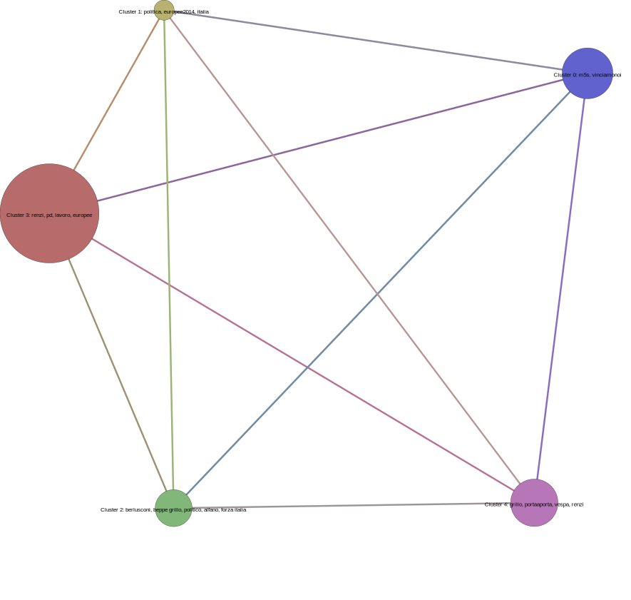

Export result for K=5
Distance between each cluster :
Distance between Cluster 0 and Cluster 1 Value: 0.9407912264331728Ordered Distance List:
Distance between Cluster 2 Cluster 3 Value: 0.8696760002889876Top Tweet for each cluster:
10 top tweet in cluster 0:
Id tweet: 469876356629925888 Original tweet: http://t.co/IGBfiSxLjC #stiamofacendolastoria #vinciamonoi
#dopovogliamoleliste #m5s
Id : 470692082752176128 Text: RT @gustomela: M5S? Grilled! #vinciamonoi
Id : 468841940994502656 Text: #m5s VINCIAMONOI VINCIAMONOI VINCIAMONOI VINCIAMONOI
Id : 468869266859909120 Text: #vinciamonoi #chioggia #M5S http://t.co/8RxBKRqKFY
Id : 470675893913141250 Text: #M5S e mó? #vinciamonoi #epoitisveglituttosudato
Id : 469895265789673473 Text: #M5S strike. #vinciamonoi http://t.co/Xv1XSyNGdj
Id : 468451762702020609 Text: #m5s #mandiamoliacasa #renzipagliaccio #vinciamonoi
http://t.co/TDcJMfphC2
Id : 469765518715793408 Text: #VinciamoNoi #Castenaso #SagginSindaco #M5S
Id : 469848376381812736 Text: #M5S #M5Selfie #vinciamonoi http://t.co/62WLx9Qxpj
Id : 468446329312935936 Text: https://t.co/umZNqgipLS #vinciamonoi #Europa5stelle #M5S
10 top tweet in cluster 1:
Id : 468487403301527552 Text: @matteo_scarpinisconosciuto alla politica http://t.co/BVG2DbCsq0
Id : 472000417027883008 Text: @TigresdeAragua la politica,hermano,la politica
Id : 471717081810231296 Text: POLITICA
Id : 470837967146455040 Text: Politica ,politica.... perché esisti ?
Id : 469952654500978688 Text: C'è' politica e politica....e politici e politici..:-)
Id : 468496607114448897 Text: Che noia la politica. ...che noia
Id : 468572443402321920 Text: @sglbernardo @melizvw mi militancia politica no te interesa
Id : 469919734251536384 Text: POLITICA http://t.co/sZ8zH0Den0 via @transparency_it
Id : 470142251952537600 Text: *cosas de politica* http://t.co/Y54Ztyqxee
Id : 470567069529169920 Text: La politica me la chupa
10 top tweet in cluster 2:
Id : 470328278637486080 Text: BERLUSCONI,E' FERNUT A ZEZZENELL (BERLUSCONI) http://t.co/IxRwgnlI5v
Id : 470696154624425984 Text: Dichiarazioni della Santanche': "Berlusconi Berlusconi Berlusconi
Berlusconi Berlusconi Berlusconi Berlusconi Berlusconi e...Berlusconi"
Id : 470135847581679616 Text: Berlusconi latest #Berlusconi http://t.co/2ToHSIY8hV
Id : 468435874498478080 Text: #berlusconi http://t.co/vnuhD2vPlG http://t.co/CxhbtgBz3J
Id : 471033045341188098 Text: Berlusconi pappada pippadu babbada pappadapuppi! Pippadi berlusconi
maserati babbada!
Id : 468461230664187904 Text: Italy
Id : 469976178959593472 Text: @beppe_grillo Berlusconi minaccia
Id : 471001151362461696 Text: BERLUSCONI: http://t.co/gfBiKvQ4Yc SILVIO C'E' SILVIO C'E' SILVIO C'E'
Id : 469920858749030400 Text: @beppe_grillo Berlusconi è un coglione D:
Id : 470141882454917120 Text: I disordini di Berlusconi via @beppe_grillo http://t.co/51L13fiD0H
10 top tweet in cluster 3:
Id : 470159782012526592 Text Ma TL : un pd un pd un pd un pd un pd un pd un pd un pd un pd un pd un
pd un pd un pd un pd un pd un pd un pd un pd un pd un pd un pd un pd
Id : 470692285173473280 Text: Il polo non è il PD, il polo è #Renzi!
Id : 471230181059747842 Text: Europee, un plebiscito per il Pd di Renzi http://t.co/Lc2PTaJj3g
Id : 470850442688086017 Text: il pd di matteo renzi stravince le elezioni europee: il pd di matteo
renzi stravince le elezioni europee con ... http://t.co/kedonuZVok
Id : 472273106409893888 Text: Renzi al Pd: puntare su Europa e lavoro | http://t.co/0FC8BqiRKK
Id : 470712645356879872 Text: Renzi in una delle sue imitazioni: Dipré.
co/0VXn1tThbn
Id tweet: 469931396522205184 Text: ...un salto da #Renzi - PD - elezioni europee. http://t.co/IkEamkQ5fx
Id : 470736309787430913 Text: Il Pd trionfa alle Europee. Renzi: ‘È un risultato storico’
http://t.co/xJFDm78itv
Id : 470897495288344576 Text: @Simo_Battaglino con chi? Con il PD e Renzi??
Id : 470850674780307456 Text: Europee, stravince il Pd di Renzi http://t.co/cVuygxTsI4
10 top tweet in cluster 4:
Id : 468806349259018240 Text: #ASSASSINO #ASSASSINO #ASSASSINO #ASSASSINO #ASSASSINO #ASSASSINO
#ASSASSINO #ASSASSINO #ASSASSINO #ASSASSINO #ASSASSINO #ASSASSINO #grillo
Id : 470825890331783168 Text: Grillo grillai
Id : 471789801440837632 Text: Grillo Grillo Grillo -.-
Id : 470673487108263937 Text: .......grillo.......cric.....cric.....cric
Id : 468499316504813568 Text: Grillo Grillo Grillo Grillo Grillo su rai1 ora........................
Id : 470688635344678913 Text: Sei un BUFFONE, Grillo sei un buffone, un buuuffoooneee, e Grillo sei
un buffone...
Id : 468484428285894657 Text: Grillo chi? http://t.co/tzx1M3BLDH
Id : 469967105140719618 Text: Elezioni: #Grillo rincorre #Renzi che rincorre #Berlusconi che rincorre
Grillo
Id : 470644656209154049 Text: @BiancaSteriLady non vincera Grillo , se vincera vincera #M5S
Id : 469898614895284224 Text: @NicTrades M5S Run Grillo RUN !!! http://t.co/WfEguxK7Ff